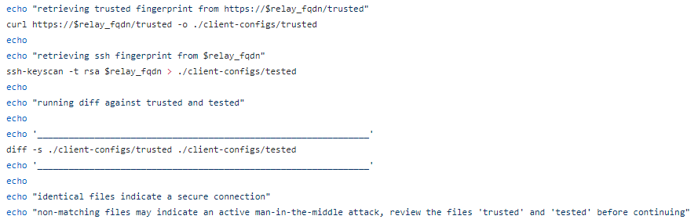

3.1 Configure Client
daniele@TelesploitClient:~$ cd /home/<user>/
daniele@TelesploitClient:~$ mkdir <relaySubdomain>
daniele@TelesploitClient:~$ cd <relaySubdomain>
daniele@TelesploitClient:~$ git clone https://github.com/telesploit/telesploit-client.git
daniele@TelesploitClient:~$ cd telesploit-client/
daniele@TelesploitClient:~$ ls
daniele@TelesploitClient:~$ cd linux/
1. On Linux, update the relay_fqdn variable in
./telesploit-client/linux/client-configs/client.cfg
daniele@TelesploitClient:~$ nano /home/<user>/<relaySubdomain>/telesploit-client/linux/client-configs/client.cfg
Change
relay_fqdn='relay-os.telesploit.com' To
relay_fqdn='<relaySubdomain>' → <relaySubdomain> is the subdomain that we associate
to the ip address of the instance of AWS (
here to
see how we have done)
2. Now we can run the script setup_client.sh
daniele@TelesploitClient:~$ /home/<user>/<relaySubdomain>/telesploit-client/linux/setup_client.sh
1) Please verify that the correct relay FQDN is set in ./client-configs/client.cfg and that your public
key has been added on the relay (default /home/$ssh_user/.ssh/authorized_keys)
To do that see
1.3
Add authorized keys to the relay, we have to add the same public key <penTesterPublicKey> used the
Configuration
of the Server at point 5.2.
Otherwise the relay will refuse our connection for “Too many authentication
failures”
3) If the relay is not correct, or does not resolve then exit now and correct the issue. Press any
key to continue or Ctrl+C to exit...
4) Enter the full path to the private key being used to access the
Telesploit server, e.g. /home/user/.ssh/user.id_rsa, followed by [ENTER]:
In the
configuration
of the Server at point 5.2 we have set the public key of the penetration tester (
tester_pub_key),
now we have to insert the private key of the penetration tester.
Attention we have to insert the path not the
content.
This the option of a direct ssh from the Client to the Server without pass from the Relay
4)
Like in the
configuration
of the Server we are doing at point 10.6
 *
ATTENTION: in the test done during the
configuration of the server in server_setup.sh the files did not match while here yes... Is this could be caused by
the fact that to retrieve the fingerprint from the webpage is been used curl instead of wget?